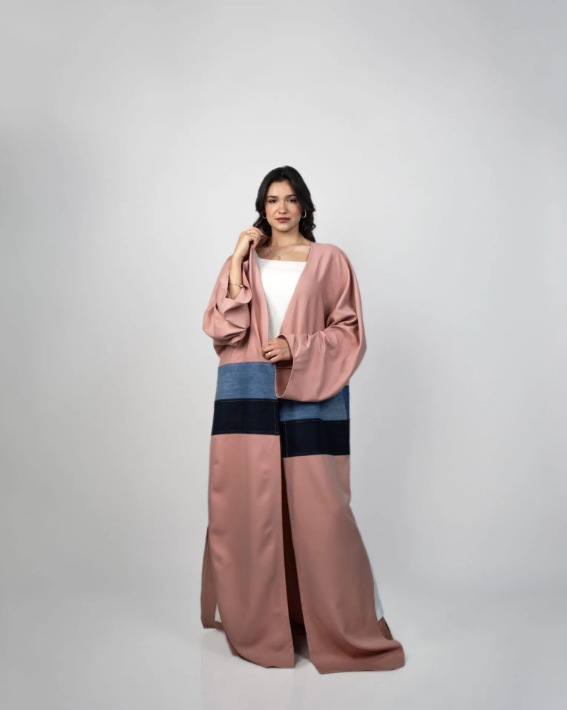
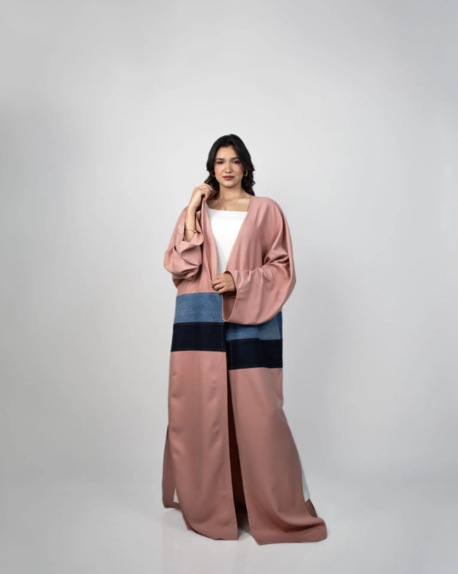
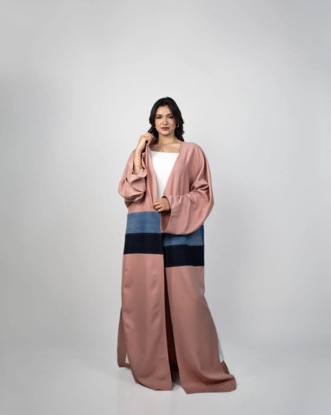

Aqui tiene ejemplos de nuestra ropa:

 

Somos el catálogo de Eco-Wear, la plataforma donde puedes descubrir toda la gama de productos que ofrece esta innovadora empresa. En Eco-Wear, nos dedicamos a revolucionar la industria de la moda, comprometiéndonos a crear prendas exclusivas elaboradas únicamente con materiales amigables con el medio ambiente. Nuestro objetivo es combinar estilo y sostenibilidad, ofreciendo ropa que no solo te haga lucir bien, sino que también contribuya positivamente al planeta. Cada pieza en nuestro catálogo ha sido cuidadosamente diseñada y fabricada para minimizar el impacto ambiental, utilizando técnicas y materiales que promueven un futuro más verde y responsable. Únete a nosotros en este viaje hacia una moda más consciente y descubre cómo puedes hacer una diferencia sin sacrificar el estilo.
Porque cuando se fabrica no se contamina tanto a comparación que con fibras textiles o cueros sinteticos
Si hay diferencia, es buena por su increible durabilidad en comparación con la ropa común
materiales que se usan en la creación de ropa ecologica son por ejemplo: la lana, el lino o el algodón orgánico
Aqui tiene ejemplos de nuestra ropa:
